Of course, R was written by statisticians, for statisticians. We’re not going to go deep into stats - partly because I’m not really that qualified to teach it, and because we don’t have time to cover all of the potential needs that people in the course will have. But we can cover a few of the basics, and introduce the common R way of fitting statistical models.
We’ll keep going with our Iris data; we want to test if petal lengths are significantly different between Iris setosa and Iris virginica; so we can use a basic two-sample t-test.
First, let’s search the help to find out what functions are avaible: ??"t-test" . Student’s t-test is the one we want. There are a few variations of the t-test available. If we are testing a single sample against a known value (for example, find out if something is different from 0), we would use the single-sample t-test like so:
# Simulate some data with a normal distribution, a mean of 0, and sd of 1.
data <- rnorm(100)
mean(data)## [1] 0.01360315t.test(data, mu=0)##
## One Sample t-test
##
## data: data
## t = 0.1308, df = 99, p-value = 0.8962
## alternative hypothesis: true mean is not equal to 0
## 95 percent confidence interval:
## -0.1927919 0.2199982
## sample estimates:
## mean of x
## 0.01360315## Unsurprisingly, not significant.For the iris data, we want to use a two-sample t-test. I like using the formula specification because it’s similar to how many other statistical tests are specified: t.test(Value ~ factor, data=)
Since we’re only interested in setosa and virginica, we need to get rid of versicolor.
require(dplyr)
setosa.virginica <- filter(dat, Species != "versicolor")
summary(setosa.virginica)## Sepal.Length Sepal.Width Petal.Length Petal.Width
## Min. :4.300 Min. :2.200 Min. :1.000 Min. :0.100
## 1st Qu.:5.000 1st Qu.:3.000 1st Qu.:1.500 1st Qu.:0.200
## Median :5.700 Median :3.200 Median :3.200 Median :1.000
## Mean :5.797 Mean :3.207 Mean :3.507 Mean :1.136
## 3rd Qu.:6.500 3rd Qu.:3.500 3rd Qu.:5.525 3rd Qu.:2.000
## Max. :7.900 Max. :4.400 Max. :6.900 Max. :2.500
## NA's :4
## Species
## setosa :50
## versicolor: 0
## virginica :50
##
##
##
## setosa.virginica <- droplevels(setosa.virginica)t.test(Sepal.Length ~ Species, data=setosa.virginica)##
## Welch Two Sample t-test
##
## data: Sepal.Length by Species
## t = -15.3862, df = 76.516, p-value < 2.2e-16
## alternative hypothesis: true difference in means is not equal to 0
## 95 percent confidence interval:
## -1.78676 -1.37724
## sample estimates:
## mean in group setosa mean in group virginica
## 5.006 6.588Let’s see if petal length can be used to predict petal width for a single species; Iris setosa. (Note; this is a bit of a misuse of regression, as regression usually implies causation, but as an example it will suffice).
The following code fits the basic linear regression model where Petal.Length is the response variable and Petal.Width is the predictor variable, then prints a summary of the model.
setosa.dat <- filter(dat, Species == "setosa")
petal.reg <- lm(Petal.Length ~ Petal.Width, data=setosa.dat)
summary(petal.reg)##
## Call:
## lm(formula = Petal.Length ~ Petal.Width, data = setosa.dat)
##
## Residuals:
## Min 1Q Median 3Q Max
## -0.43686 -0.09151 -0.03686 0.09018 0.46314
##
## Coefficients:
## Estimate Std. Error t value Pr(>|t|)
## (Intercept) 1.32756 0.05996 22.141 <2e-16 ***
## Petal.Width 0.54649 0.22439 2.435 0.0186 *
## ---
## Signif. codes: 0 '***' 0.001 '**' 0.01 '*' 0.05 '.' 0.1 ' ' 1
##
## Residual standard error: 0.1655 on 48 degrees of freedom
## Multiple R-squared: 0.11, Adjusted R-squared: 0.09144
## F-statistic: 5.931 on 1 and 48 DF, p-value: 0.01864p <- ggplot(setosa.dat, aes(x = Petal.Width, y = Petal.Length)) + geom_point()
dummy <- data.frame(Petal.Width = seq(from = min(setosa.dat$Petal.Width),
to = max(setosa.dat$Petal.Width),
length.out = 100))
pred <- predict(petal.reg, newdata=dummy, interval = "conf")
dummy <- cbind(dummy, pred)
p + geom_line(data = dummy, aes(y = fit)) +
geom_line(data = dummy, aes(y = lwr), linetype = 'dashed') +
geom_line(data = dummy, aes(y = upr), linetype = 'dashed')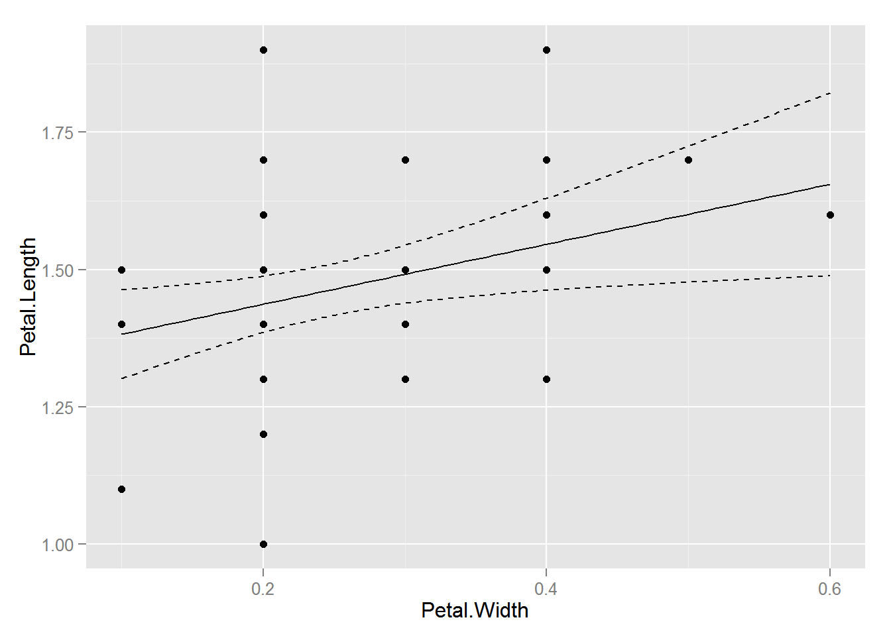
ggplot2 will also generate a fitted line and confidence intervals for you - which is useful, but only works for a univariate relationship … it’s also nice to do it yourself as above so you know that the fit is coming directly from regression model you ran.
p + geom_smooth(method="lm")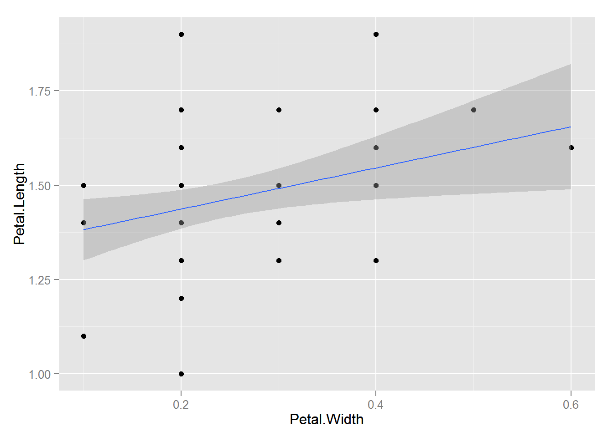
We can check these assumptions of the model by plotting the residuals vs the fitted values.
fitted <- fitted(petal.reg)
residuals <- resid(petal.reg)
ggplot(data=NULL, aes(x = fitted, y = residuals)) + geom_point() +
geom_hline(yintercept = 0)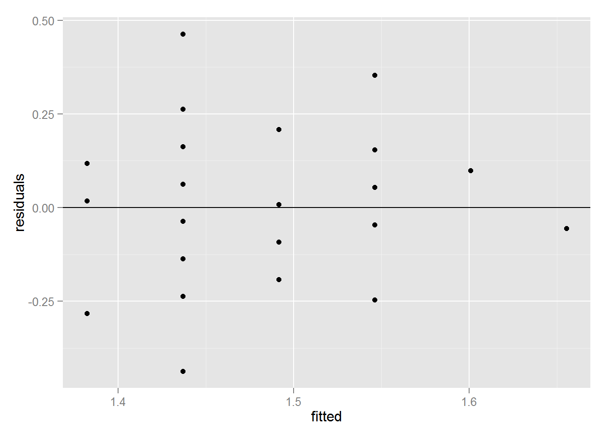
We can check also assumptions using plot(). There are actually a bunch of different plot methods in R, which are dispatched depending on the type of object you call them on. When you call plot on an lm object, a series of diagnostic plots is created to help us check the assumptions of the lm object.
plot(petal.reg)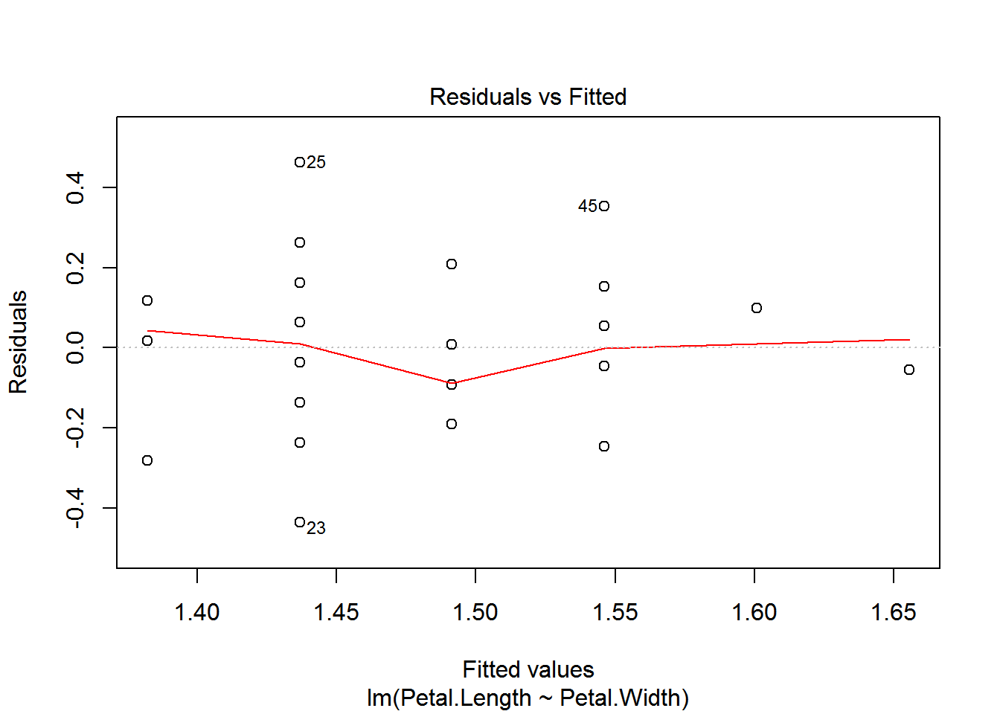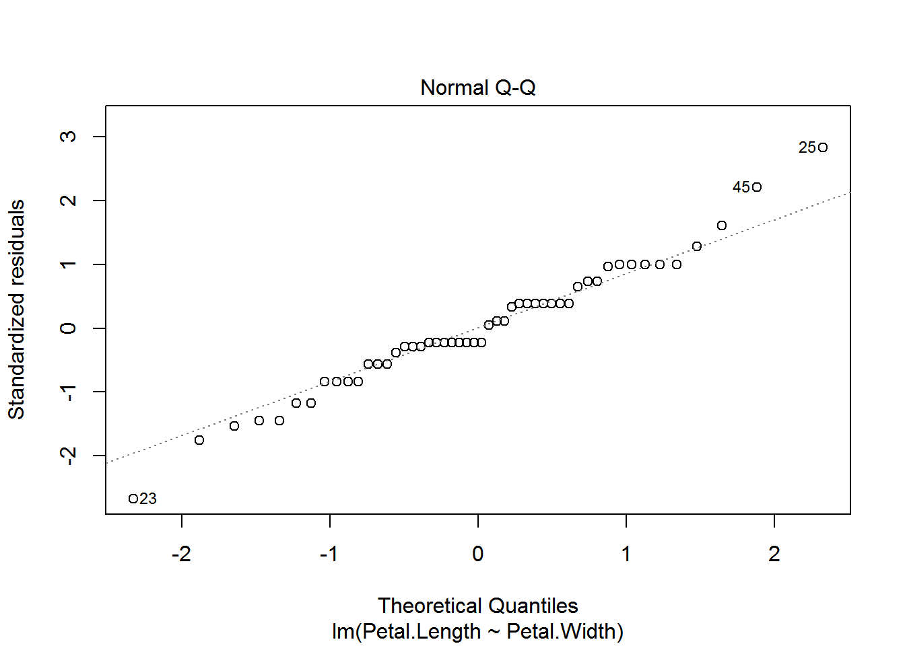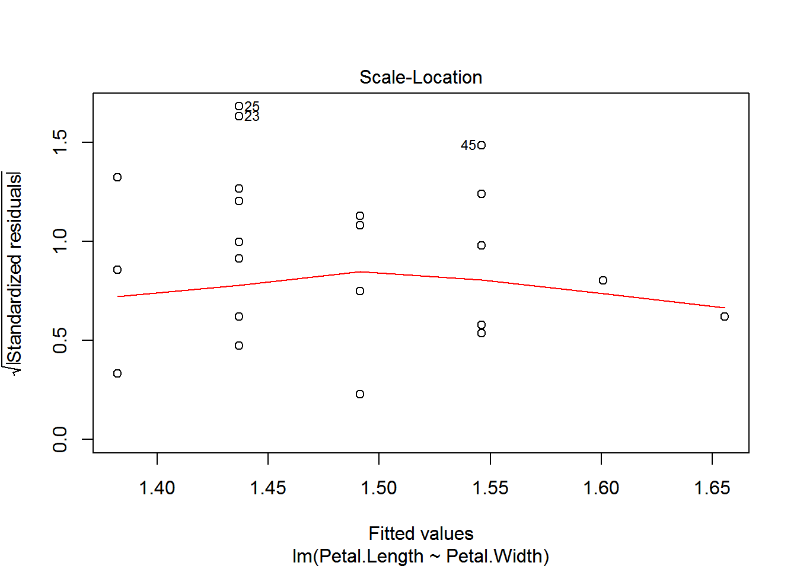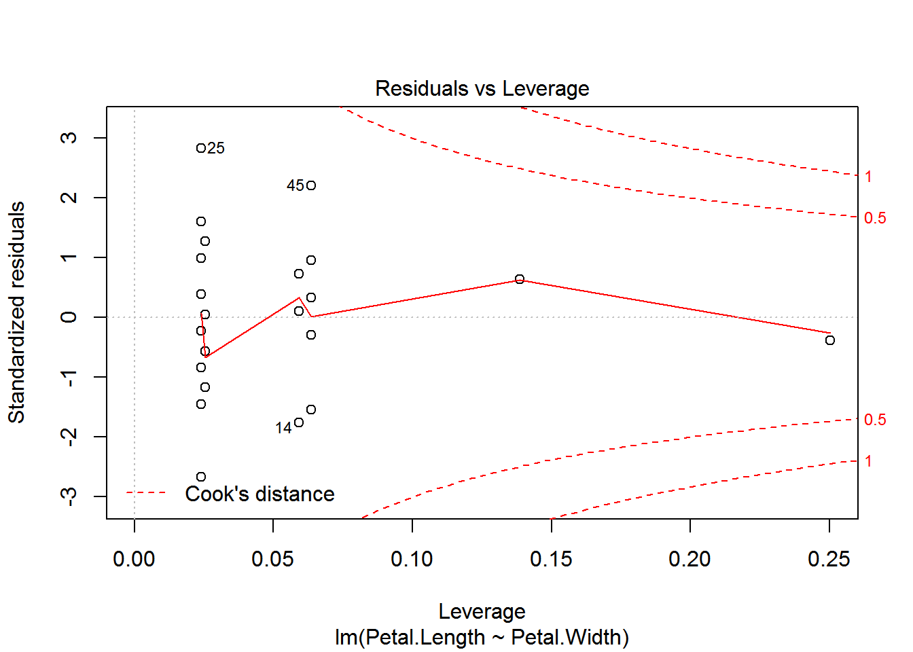
Get more information on these plots by checking ?plot.lm.
Now say we want to compare an attribute among all three species, then we can’t use a t-test; we have to use an ANOVA. Since an ANOVA is simply a linear regression model with a categorical rather than continuous predictor variable, we still use the lm() function. Let’s test for differences in petal length among all three species.
petal_length.aov <- lm(Petal.Length ~ Species, data=dat)
summary(petal_length.aov)##
## Call:
## lm(formula = Petal.Length ~ Species, data = dat)
##
## Residuals:
## Min 1Q Median 3Q Max
## -1.260 -0.258 0.038 0.240 1.348
##
## Coefficients:
## Estimate Std. Error t value Pr(>|t|)
## (Intercept) 1.46200 0.06086 24.02 <2e-16 ***
## Speciesversicolor 2.79800 0.08607 32.51 <2e-16 ***
## Speciesvirginica 4.09000 0.08607 47.52 <2e-16 ***
## ---
## Signif. codes: 0 '***' 0.001 '**' 0.01 '*' 0.05 '.' 0.1 ' ' 1
##
## Residual standard error: 0.4303 on 147 degrees of freedom
## Multiple R-squared: 0.9414, Adjusted R-squared: 0.9406
## F-statistic: 1180 on 2 and 147 DF, p-value: < 2.2e-16anova(petal_length.aov)## Analysis of Variance Table
##
## Response: Petal.Length
## Df Sum Sq Mean Sq F value Pr(>F)
## Species 2 437.10 218.551 1180.2 < 2.2e-16 ***
## Residuals 147 27.22 0.185
## ---
## Signif. codes: 0 '***' 0.001 '**' 0.01 '*' 0.05 '.' 0.1 ' ' 1ggplot(data = dat, aes(x = Species, y = Petal.Length)) + geom_boxplot()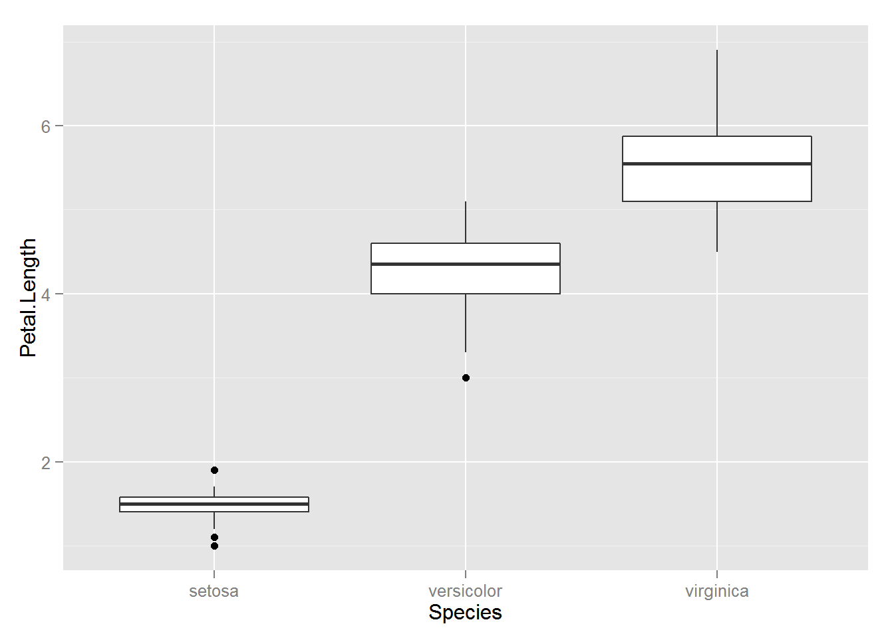
ggplot(data = dat, aes(x = Species, y = Petal.Length)) + geom_point()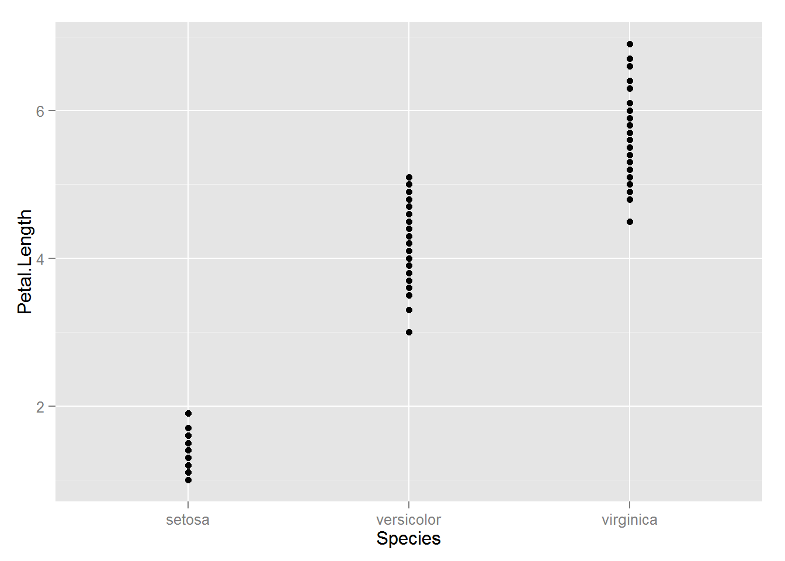
ggplot(data = dat, aes(x = Species, y = Petal.Length)) + geom_jitter()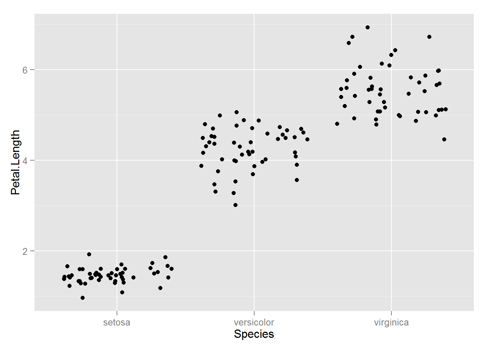
fitted <- fitted(petal_length.aov)
residuals <- resid(petal_length.aov)
ggplot(data=NULL, aes(x = fitted, y = residuals)) + geom_point() +
geom_hline(yintercept = 0)Say you want to know whether elevation can predict whether or not a particular species of beetle is present (all other things being equal of course). You walk up a hillside, starting at 100m elevation and sampling for the beetle every 10m until you reach 1000m. At each stop you record whether or the beetle is present (1) or absent (0).
First, let’s simulate some data
## Generate a sequence of elevations
elev <- seq(100, 1000, by=10)
# Generate a vector of probabilities the same length as `elev` with increasing
# probabilities
probs <- 0:length(elev) / length(elev)
## Generate a sequence of 0's and 1's
pres <- rbinom(length(elev), 1, prob=probs)
## combine into a data frame and remove consituent parts
elev_pres.data <- data.frame(elev, pres)
rm(elev, pres)
## Plot the data
ggplot(elev_pres.data, aes(x = elev, y = pres)) + geom_point()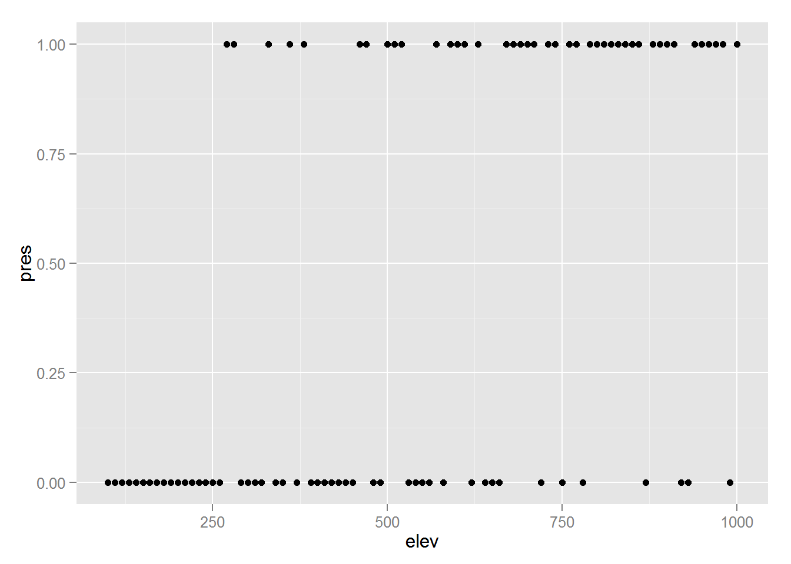
Presence / absence data is a classic example of where to use logistic regression; the outcome is binary (0 or 1), and the predictor variable is continuous (elevation, in this case). Logisitic regression is a particular type of model in the family of Generalized Linear Models. Where ordinary least squares regression assumes a normal disribution of the response variable, Generalized linear models assume a different distribution. Logistic regression assumes a binomial distribution (outcome will be in one of two states). Another common example is the poisson distribution, which is often useful for count data.
Implementing GLMs is relatively straightforward using the glm() function. You specify the model formula in the same way as in lm(), and specify the distribution you want in the family parameter.
lr1 <- glm(pres ~ elev, data=elev_pres.data, family=binomial)
summary(lr1)##
## Call:
## glm(formula = pres ~ elev, family = binomial, data = elev_pres.data)
##
## Deviance Residuals:
## Min 1Q Median 3Q Max
## -2.0769 -0.8052 -0.4233 0.8323 1.9113
##
## Coefficients:
## Estimate Std. Error z value Pr(>|z|)
## (Intercept) -3.032963 0.687539 -4.411 1.03e-05 ***
## elev 0.005118 0.001118 4.579 4.67e-06 ***
## ---
## Signif. codes: 0 '***' 0.001 '**' 0.01 '*' 0.05 '.' 0.1 ' ' 1
##
## (Dispersion parameter for binomial family taken to be 1)
##
## Null deviance: 125.61 on 90 degrees of freedom
## Residual deviance: 96.42 on 89 degrees of freedom
## AIC: 100.42
##
## Number of Fisher Scoring iterations: 4So let’s add the curve generated by the logistic regression to the plot:
ggplot(elev_pres.data, aes(x = elev, y = pres)) +
geom_point() +
geom_line(aes(y = predict(lr1, type="response")))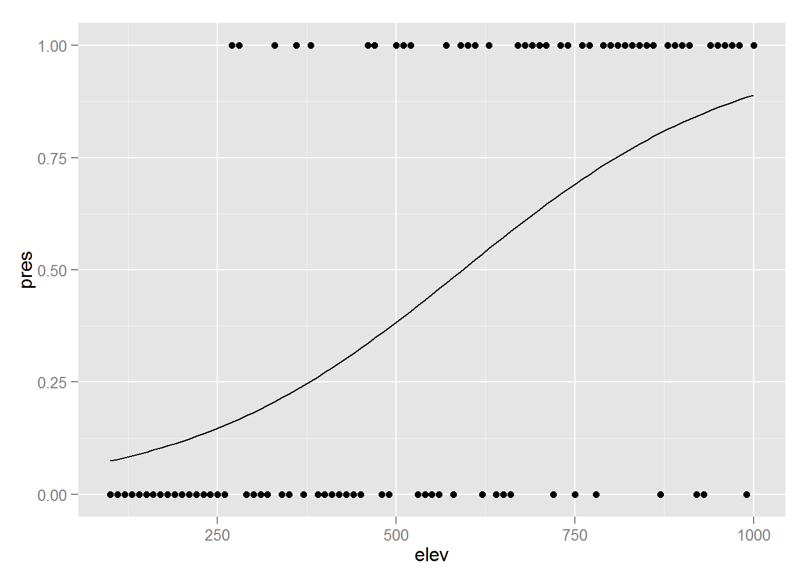
mod1 <- lm(Sepal.Length ~ Sepal.Width * Species, data=iris)
mod2 <- lm(Sepal.Length ~ Sepal.Width + Species, data=iris) # ANCOVA
mod3 <- lm(Sepal.Length ~ Sepal.Width, data=iris)
mod4 <- lm(Sepal.Length ~ Species, data=iris)
AIC(mod1, mod2, mod3, mod4)## df AIC
## mod1 7 187.0922
## mod2 5 183.9366
## mod3 3 371.9917
## mod4 4 231.4520Let’s plot the data:
ggplot(iris, aes(x=Sepal.Width, y=Sepal.Length, colour=Species, group=Species)) +
geom_point() +
geom_smooth(method="lm", formula = y ~ x)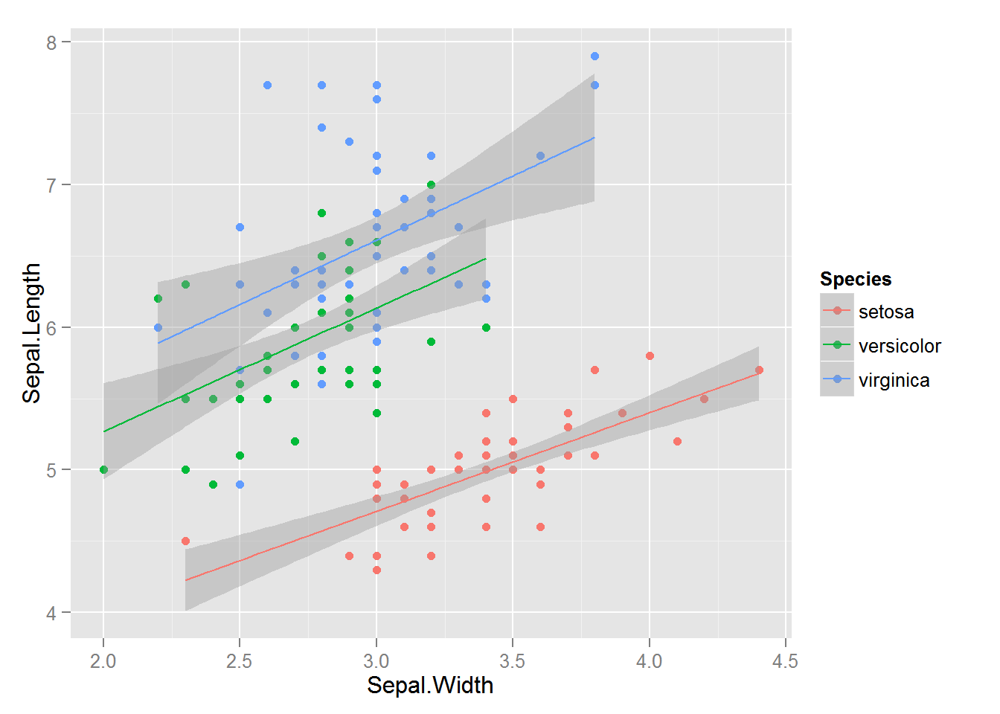